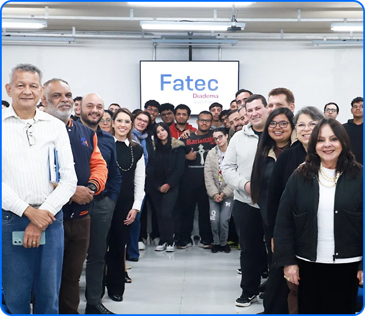

A Fatec Diadema é uma instituição pública de ensino superior
localizada em Diadema, São Paulo, que oferece cursos tecnológicos
voltados às necessidades do mercado de trabalho.
A faculdade tem como objetivo proporcionar uma formação prática e de
qualidade, preparando os estudantes para atuar em diferentes áreas
profissionais, como nas áreas de tecnologia, gestão e indústria.
A faculdade proporciona um ambiente preparado a seus diferentes
cursos, como laboratórios de computadores e laboratórios de química,
que são devidamente equipados e seguros para a realização das aulas.

Um dos cursos fornecidos pela Fatec que tem como perfil o profissional que projeta, desenvolve e testa software para múltiplas plataformas